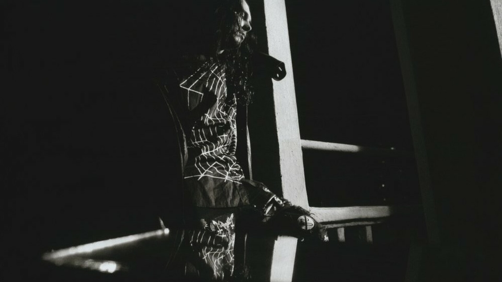
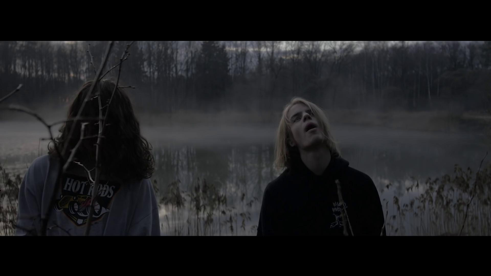
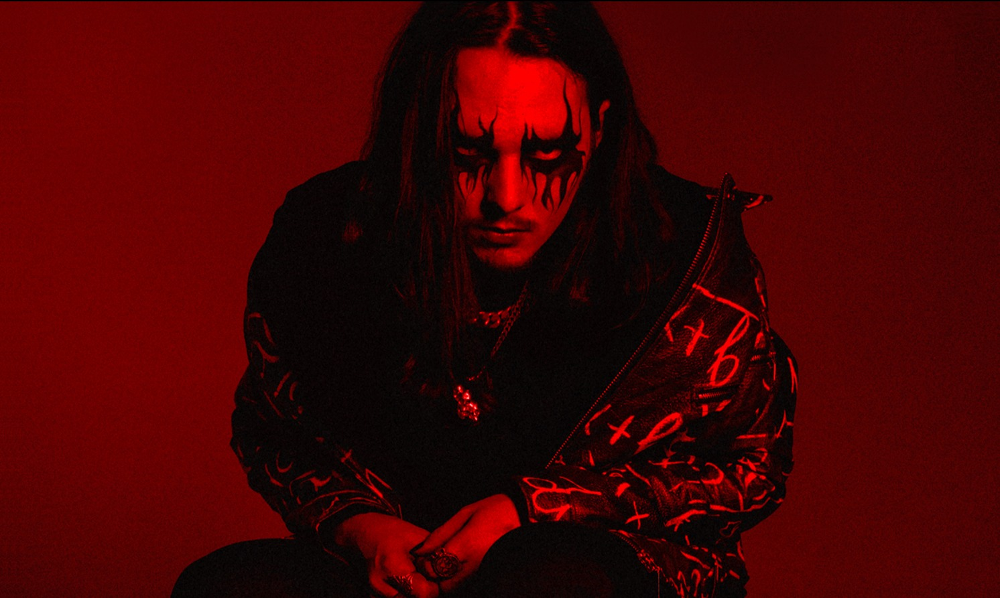

White Punk (Уайт Панк) – битмейкер, музыкальный исполнитель. Свою творческую деятельность Даниил начал в 2013 году под ником PHVANTXM. 2015 год ознаменовывается выпуском White Punk "Remixes Are Dead". White Punk "Quintillian" (2016 год выпуска) – релиз, который состоит из инструменталов. Noa & White Punk "Ветра" – совместный альбом, который вышел в декабре 2016 года. Pharaoh "Phosphor" (2016 год) является релизом, за музыку на котором отвечал герой нашей статьи. "Paradox" – релиз, который вышел в мае 2017 года. Ноябрь 2017 года ознаменовался выпуском инструментального альбома под названием "Ugly Tears". "Entropy" является очередным творением от White Punk, которое выходит в январе 2018 года. В феврале 2018 года выпускает альбом под названием "Ttwwiinnss". В июле 2018 года выходит альбом White Punk & CallMeDevol "Bloody Season I". Полное имя: Даниил Бумагин Псевдоним: White Punk (Уайт Панк) Дата рождения: 7 мая 1997 г. Возраст: 24 года Место рождения, проживания: Пенза, Россия Знак зодиака: Телец Рост: 182 см | Вес: 72 кг



Дополнительная информация:
|